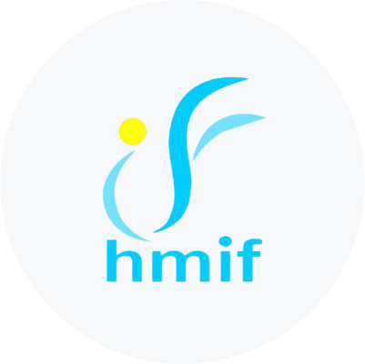
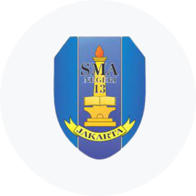

About
Ini adalah deskripsi singkat tentang saya. Saya seorang web developer dengan pengalaman lebih dari 3 tahun. Saya memiliki kemampuan dalam mengembangkan website menggunakan HTML, CSS, dan Javascript. Saya juga terampil dalam penggunaan
framework seperti Bootstrap dan React. Selain itu, saya memiliki pengalaman dalam bekerja dalam tim dan saya memiliki kemampuan untuk berkomunikasi dengan baik.
Experience
Staff of Partnership Team
Google Student Developer Club Universitas Diponegoro
Nov 2022 - Present
- Reaching out to the speakers for the GDSC event.
- Reaching out to other GDSC chapters and communities to work together.

Head of Human Resource Development
HMIF Universitas Diponegoro
Mar 2022 - Dec 2022
- In charge of managing all aspects in human resource development including planning and executing programs to improve skills, knowledge, and efficiency within the organization.
- Programs including Sarasehan Kaderisasi, Kunjungan Instansi, Informatics Gathering (I-Gate), LKMMPD, and Informatics Concept Socialization (I-Console) are being implemented without any major issues.
Development Staff of Human Resources Development
HMIF Universitas Diponegoro
Mar 2021 - Dec 2021
- Accountable for and giving feedback to the head of the Human Resource Development.
- Helping Informatics Students at Diponegoro University to reach their full potential.
Operating Systems Practicum Assistant
Google Student Developer Club Universitas Diponegoro
Sep 2022 - Nov 2022
- In the Operating Systems course, I help lectures teach practicum material with Oracle VM Virtual Box software. The material is taught about the basics of Command Line Interface (CLI) in Ubuntu 22.04.1 LTS.
Education
Bachelor of Informatics
Diponegoro University, Faculty of Science and Mathematics
Aug 2020 - Present
- GPA 3.75/4.00 with 106 total credit.
- Examining the organization, behavior, and communication between natural and artificially created computing systems, including logical thinking, computer programming, and communication skills.

High School Diploma
SMA Negeri 13 Jakarta
Aug 2017 - Jun 2020
- Graduated with 85.68 GPA (out of 100).
Credentials & Certificates
Belajar Dasar UX Design
Dicoding Indonesia
Jan 2022 - Jan 2025
- Acquiring a comprehensive understanding of UX principles and the steps involved in the process, utilizing the Design Thinking framework as a guide.
- Creating a portfolio of a UX case study that includes the entire process, from identifying user problems, defining the problem, exploring solutions, creating prototypes, to testing the prototype.
Architecting on AWS
Dicoding Indonesia
Jan 2022 - Jan 2025
- Learning how to build cloud architecture on AWS, from the simple with Amazon S3, to the advanced with serverless.